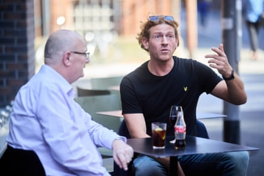
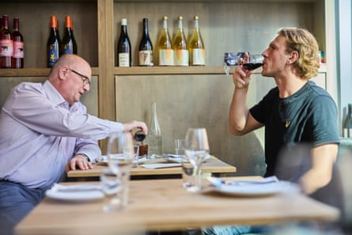
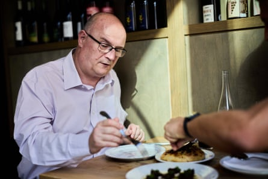
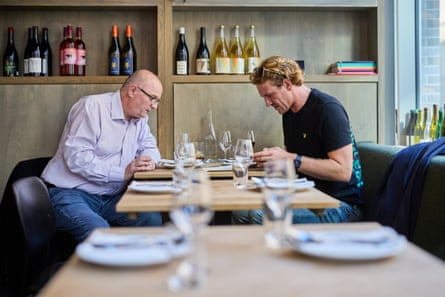
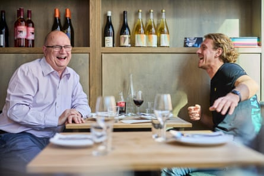

Matt, 52, Leek, Staffordshire
Occupation Account director in the IT sector
Voting record Conservative, but in the last election he protest-voted for Reform
Amuse bouche He’s a huge Metallica fan, and will be seeing them next year for the 25th time
Sam, 33, Oldham
Occupation Financial services technician
Voting record Always Labour until the last election, when he voted Green
Amuse bouche After dancing in seven consecutive national ballroom dancing finals, he’s just retired, because he is, in ballroom dancing terms, a senior
For starters
Sam We immediately started chatting about music, and got on really well.
Matt He was a really likable chap, very open and conversational, like myself.
Sam I’ve been to the restaurant before, and I’ve spent the last two years telling everyone about the beef dripping flatbread with massive salt crystals. We also had beetroot in a creamy foam and herb oil, a cuttlefish risotto and a very lemony skate on crushed potatoes. It was excellent.
Matt I had a grapefruit sorbet for dessert – amazing! Sam had red wine, which I’d have loved, but I’ve just come out of cancer treatment, so I had a Coke.
The big beef
Matt We talked about public spending. I think we need to shrink welfare – but in a controlled manner that benefits people and gets them back into work.
Sam I’d like to see more investment in the state, funded by a tax on absolutely everyone. If we had proper housing, social care and mental health structures in place, it would reduce demand on things like the NHS.
Matt We should strip all the bureaucracy out of the NHS and reinvest in medical practitioners. Sam said that’s already happening with Labour scrapping NHS England. But my understanding is that, while the organisation is being abolished, nobody’s being made redundant. They’re all being redeployed into other parts of government. So it won’t free up money for reinvestment.
Sam I don’t think Matt was too far from my perspective. He’s had a lot of contact with the NHS recently and felt there was a lot of bureaucracy that could be cut down. But when I said I’m in favour of nationalising natural monopolies like water, he largely seemed to agree.
Sharing plate
Matt I think big tech is a force for good. If you’re a researcher looking for cures for cancer and it gives you quicker access to information from a multitude of sources, surely we get better results quicker? AI worries people, because we hear it’s going to automate and take everybody’s jobs, but it’s just rules-based processing and straightforward algorithms piecing together information that’s already out there. People think it’s intelligent enough to self-learn. I haven’t seen any evidence of that.
Sam I fully agree that technology can be a force for good. But I don’t think companies like Meta and Google have our best interests at heart. We’ve seen that with electioneering and the way they manipulate people’s data to target them. We agreed technology is neutral, but once you put it into humanity’s hands, it’s not necessarily going to have a positive outcome.
For afters
Sam He was a “Stop the boats” person. From a humane standpoint I agree: I don’t want people coming across the Channel. I know once upon a time if you were seeking asylum you could turn up at an embassy. Matt thought that was a good idea, but the problem is that embassies have been whittled down to very few. To me, safe routes are the answer.
Matt As one of the top countries in the world, we have a right and a duty to take care of people who are coming to the UK because they’re at risk of harm, but I think we’ve got to get quicker at identifying those who are at risk, and then dealing with those who aren’t by processing them quicker, and returning them to their rightful abode.
Takeaways
Sam The world would be a better place if we could all have a chat. On the internet we seem to have a desire to antagonise, but in person you generally find the points on which you agree rather than differ.
Matt At the end of dinner, our conclusion was that there wasn’t a river dividing us. It was more of a stream, a trickle. When you sit down and talk to someone from supposedly the opposite side of the fence, the division isn’t as big as you think.
Additional reporting: Kitty Drake Matt and Sam ate at Erst in Manchester
Want to meet someone from across the divide? Find out how to take part